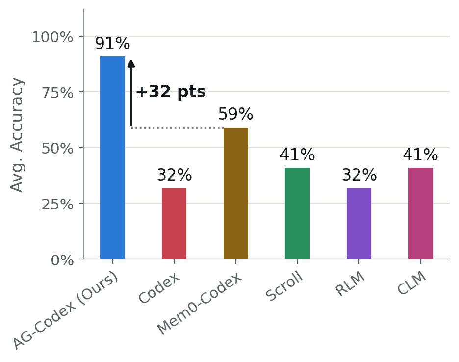
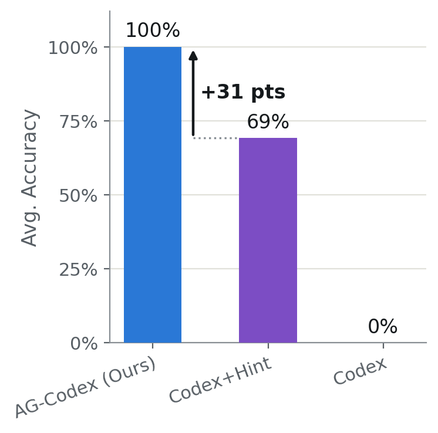

The Actor-Gatherer Framework for AI Agents
Proactive, external context management for long-running and parallel agents
The problem
Users perform interrelated tasks (e.g., build different features on a code base) using agents over long-running sessions and often in parallel, creating a large amount of evolving historical data that new tasks often depend on. This data is often too large to fit in an LLM’s context window, and various context management policies have been introduced to decide what information goes in the LLM’s context.
Broadly, existing techniques either rely on summarization, e.g., Codex includes a summary of the history in context, or tool-based access, where the agent itself can search the history using tools. However, summarization is lossy, and tool-based access requires agents to know what information to search for, causing errors when unknown unknowns are present: when an agent is missing a piece of information but is unaware that it is missing information.
Our approach
We propose the Actor-Gatherer framework, a paradigm shift in agent design where the context of agents is managed proactively and externally with another LLM. Unlike tool-based approaches, the Actor-Gatherer framework separates solving a task from the context management needed to do so. An Actor agent is responsible for performing the user-specified tasks, and a Gatherer component observes the Actor agent, as well as other agents and the environment, and decides what context should be provided to the Actor agent. The Gatherer decides the context based on the Actor’s task and actions, as well as any relevant external event (such as other Actors changing a relevant file).
We design a bolt-on framework to turn any existing harness into an Actor-Gatherer harness: different agents from different harnesses connect to a common Gatherer component that, before every LLM call, sets their context based on the collective past history of all the agents, any parallel actions performed by the user, or any other relevant information available in the environment.
Current integrations:
Results
We evaluated the Actor-Gatherer framework across coding and data analysis tasks, using it for context management of a Codex agent, referred to as AG-Codex. Fig. 1 shows the results in single-agent settings, where relevant context must include information from past interactions with the same agent. Fig. 2 shows the results when multiple agents perform tasks in parallel, so relevant context must include information from interactions with other agents or changes in the environment.


Try it out
Actor-Gatherer is an open-source bolt-on framework for context management across any agent, with current integrations for Claude Code, Codex, Pi and OpenCode. Code will be available at github.com/szeighami/actor-gatherer.